Laporan komprehensif alur operasional multi-tier berbasis Koperasi Jawa Timur — mulai dari transaksi belanja warga desa, manajemen pesanan Sub-Agen & Agen, sistem kulakan B2B, logistik kurir ojol lokal, hingga settlement holding keuangan koperasi.
Mak Ethek memecahkan permasalahan klasik rantai pasok sembako: panjangnya tengkulak dan margin yang tidak merata. Dengan memadukan Koperasi Financial Holding, seluruh legalitas pembayaran terpusat (QRIS, VA Bank), sementara pedagang warung mikro desa bertindak sebagai Sub-Agen yang melayani warga dalam radius hiperlokal 3-5 km.
Konsumen mengakses katalog sembako terstandarisasi. Berdasarkan deteksi kelurahan warga (Siti Khadijah di Kelurahan Gedog), sistem mengunci toko pelayan ke Warung Berkah Mak Ethek Gedog. Hal ini menjamin kalkulasi ongkos kirim transparan dan pengantaran cepat.
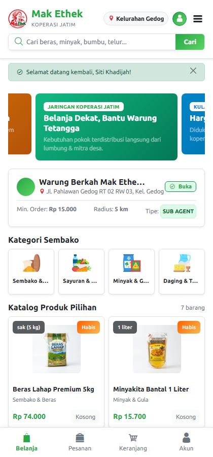
Deteksi wilayah aktif di Kelurahan Gedog dan pemilihan otomatis warung mitra terdekat untuk menjamin kepastian pasokan.
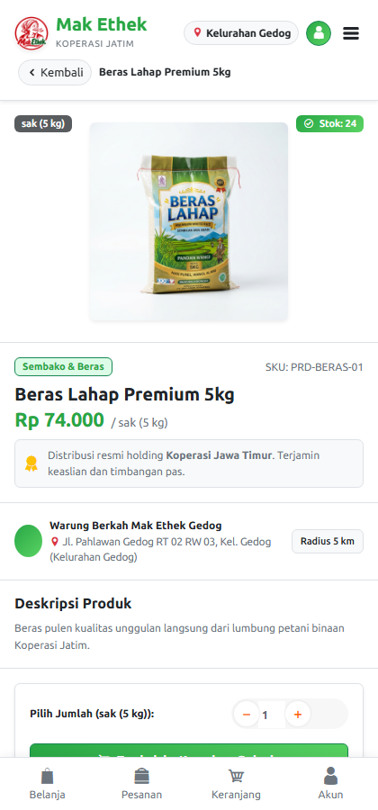
Informasi harga terstandarisasi, satuan lokal (sak 5kg, kg, liter), deskripsi lumbung petani, dan stok riil toko mitra.
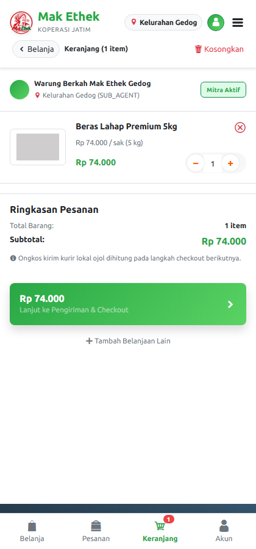
Enforcement 1 keranjang 1 toko demi menghindari pemisahan ongkir yang merugikan warga dan pedagang mikro.
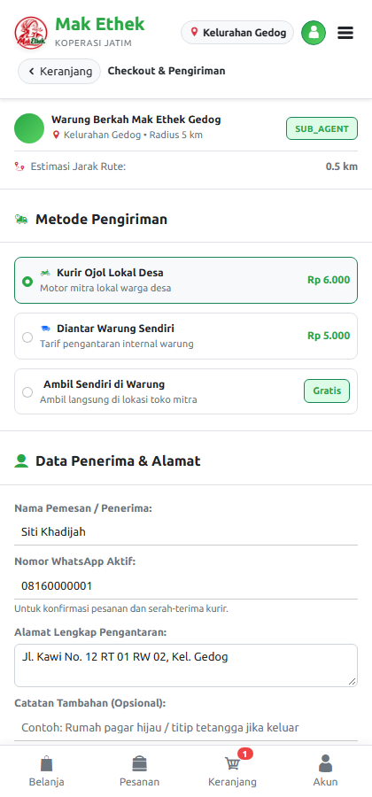
Perhitungan jarak darat rute Haversine × 1.3, pilihan kurir ojol lokal / antar warung, dan platform fee koperasi Rp 1.000.
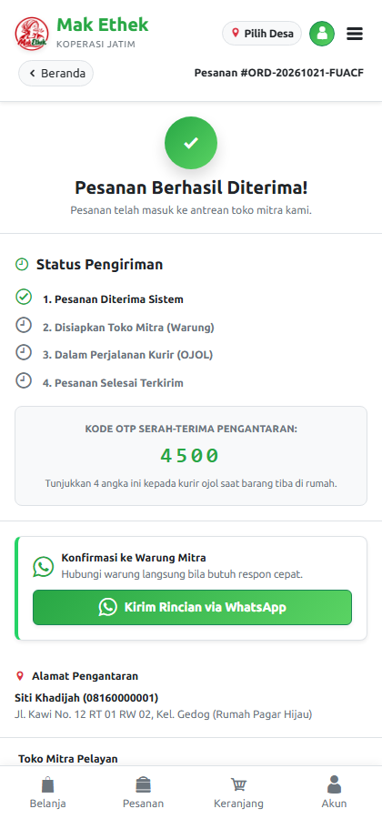
Pesanan ORD-20261021-FUACF berhasil dibuat. Menampilkan 4-digit OTP (4500) dan tombol WhatsApp konfirmasi ke warung.
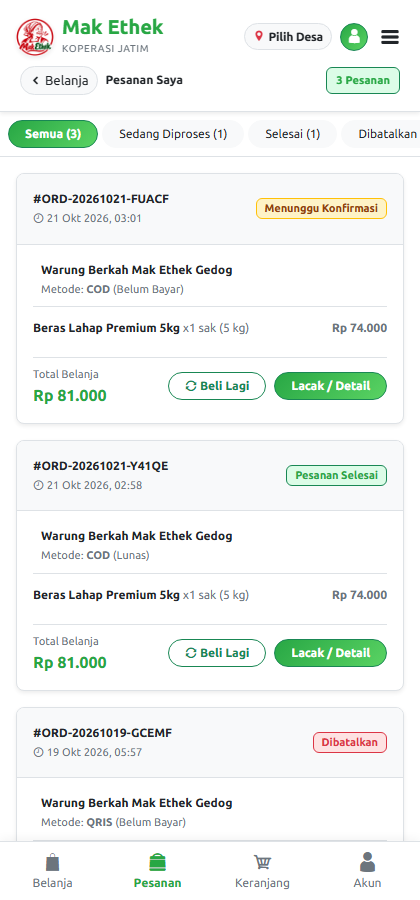
Pelanggan dapat memantau status pesanan kapan pun secara real-time minim kuota data.
Pada sisi penjualan, merchant memiliki portal khusus yang dirancang ringan dan responsif. Begitu warga membuat pesanan, daftar pesanan langsung muncul pada tab "Baru Masuk" untuk dikonfirmasi dan dikemas.
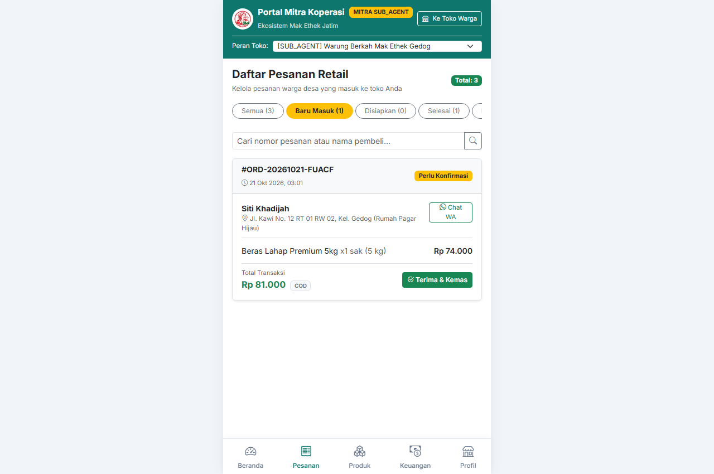
Warung Mak Ethek Gedog menerima pesanan retail atas nama Siti Khadijah. Tombol "Terima & Kemas" siap dieksekusi.
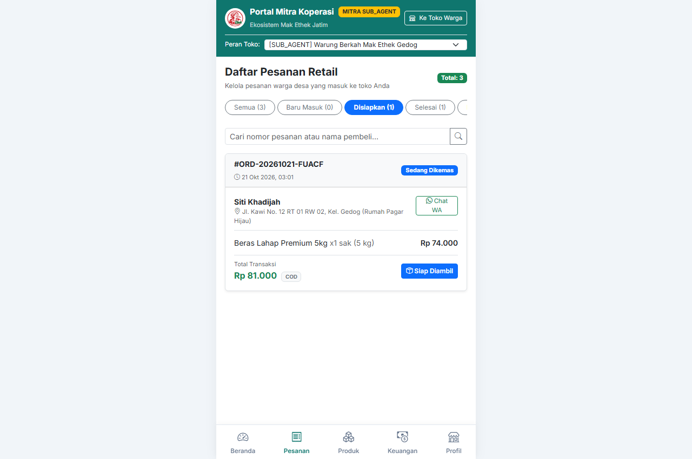
Setelah dikonfirmasi, status pesanan beralih ke Processing dan paket siap diambil oleh kurir ojol lokal.
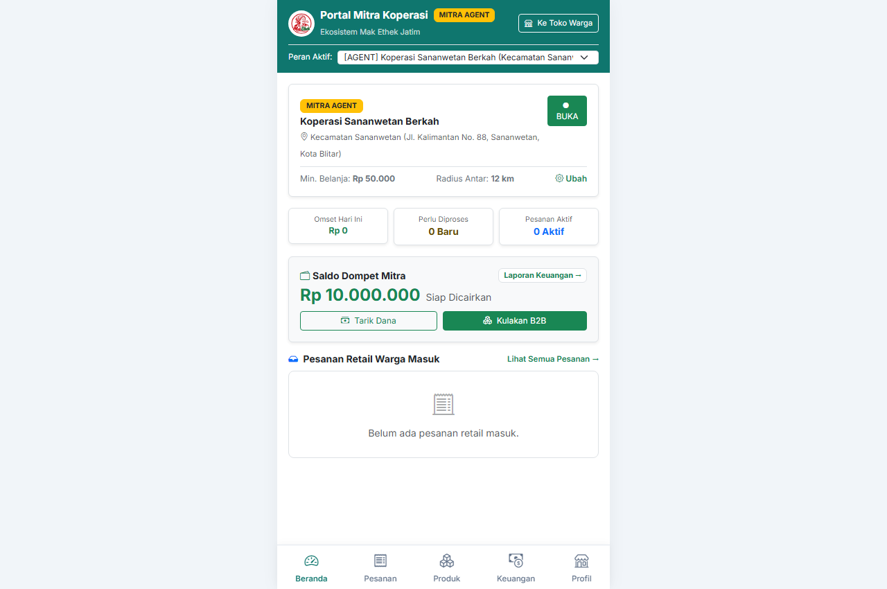
Monitoring omset kecamatan, mengelola puluhan sub-agen desa, dan siap melayani pesanan fallback bila warung desa tutup.
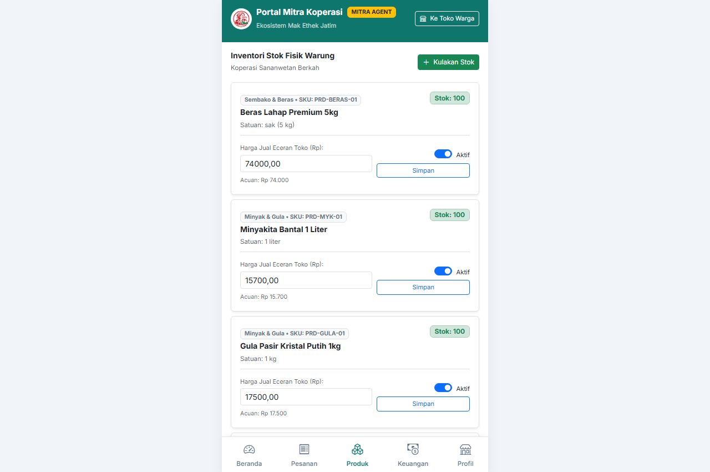
Stok pengaman di level kecamatan untuk memasok kebutuhan kulakan warung desa dan cadangan pemenuhan langsung.
Warung kelontong desa (Sub-Agen) tidak perlu pergi jauh ke pasar induk. Mereka melakukan kulakan langsung melalui portal merchant dengan harga grosir resmi koperasi:
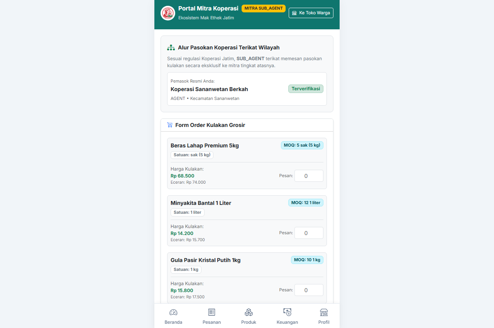
Tampilan katalog grosir khusus mitra dengan Tier Pricing resmi (misal Beras Lahap Rp 68.500 dengan MOQ 5 sak, Minyakita Rp 14.200 dengan MOQ 12 pcs). Penerimaan barang otomatis meng-update stok etalase eceran warung desa.
| Tingkatan Kulakan | Pihak Pembeli | Penyedia Pasokan | Skema Harga & Syarat |
|---|---|---|---|
| Tier 1 (Sub-Agen) | Warung Kelontong Desa | Agen Kecamatan | Harga Grosir Sub-Agen, MOQ Ringan (5-12 unit) |
| Tier 2 (Agen) | Koperasi Unit Kecamatan | Distributor Kabupaten/Kota | Harga Agen Khusus, MOQ Sedang (20-60 unit) |
| Tier 3 (Distributor) | Gudang Distribusi Daerah | Induk Koperasi Jawa Timur | Harga Lumbung Pangan Massal, MOQ Kontainer/Truk |
Pesanan yang telah siap diambil warung otomatis memicu penugasan kurir di portal driver. Kurir mengambil order dan wajib meminta kode OTP kepada pembeli saat serah terima barang:
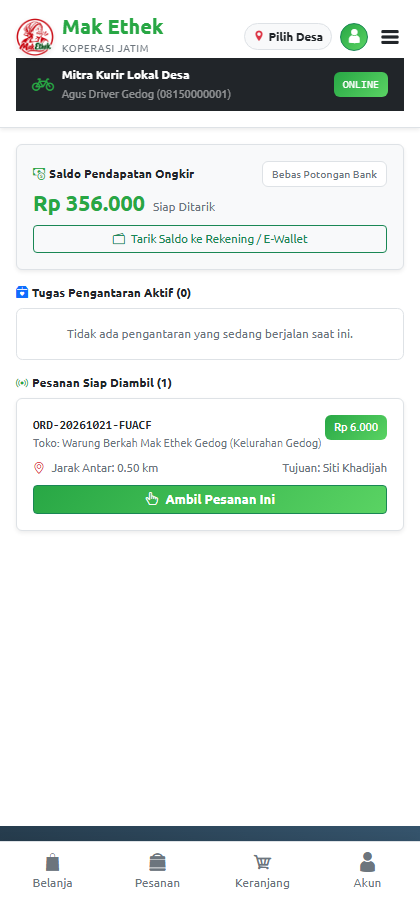
Kurir Agus melihat pesanan siap ambil di Warung Gedog lengkap dengan nominal ongkir dan rute tujuan.
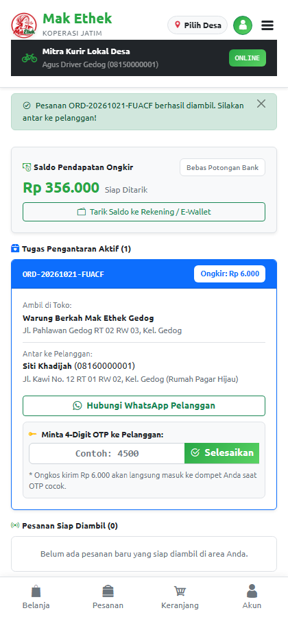
Kurir menuju rumah Siti Khadijah di Jl. Kawi. Kurir meminta kode OTP 4-digit untuk menyelesaikan pengantaran.
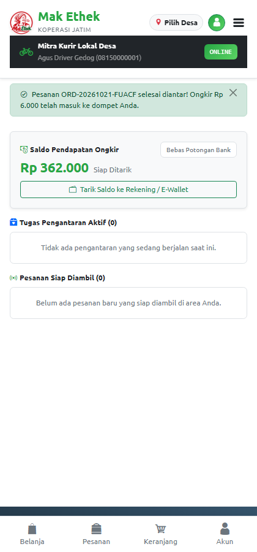
Begitu OTP cocok, status berubah menjadi Delivered dan ongkir Rp 5.000 seketika masuk ke dompet kurir tanpa potongan.
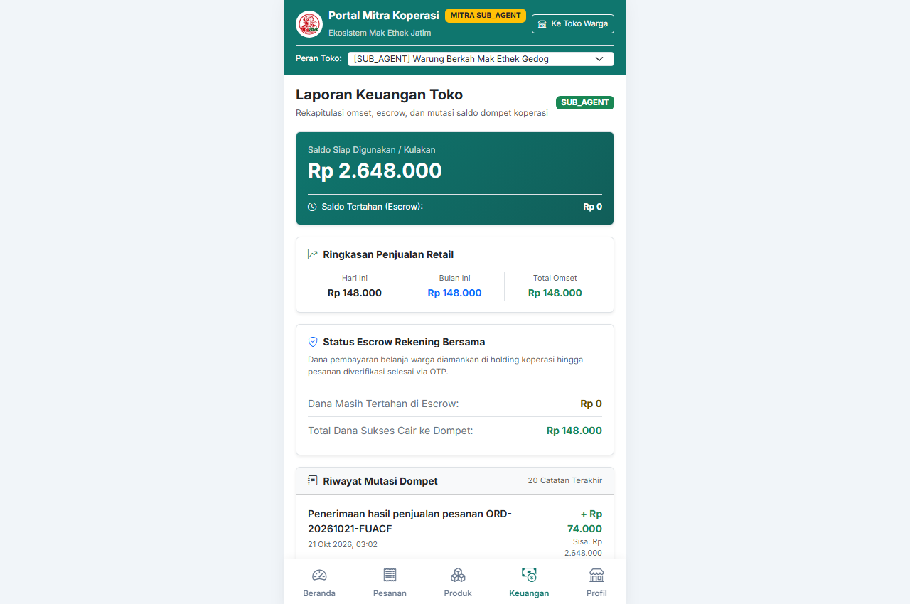
Hasil penjualan pokok produk langsung dicairkan dari escrow_pending ke balance_available toko mitra.
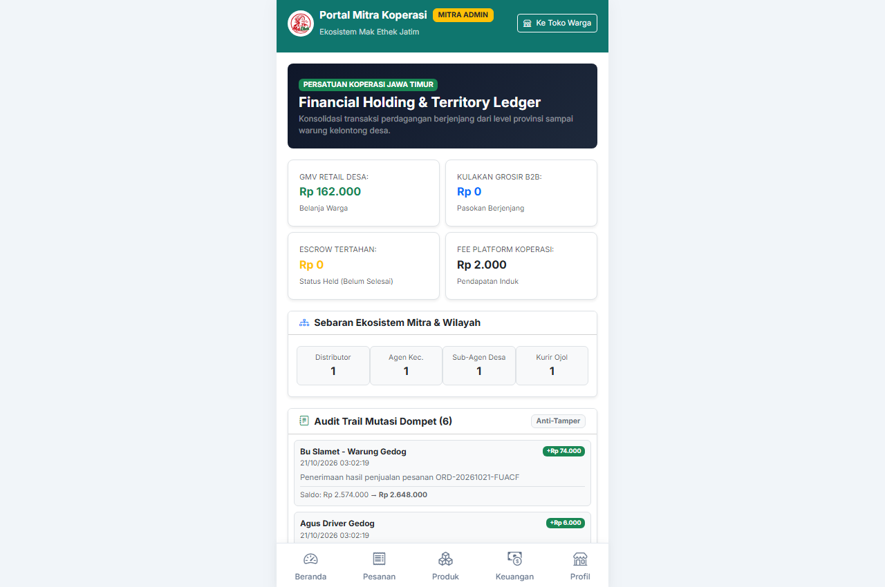
Pengawasan menyeluruh terhadap perputaran arus barang, fee platform koperasi, dan kepatuhan distribusi di seluruh kabupaten/kota.
| Komponen Ekosistem | Model Tradisional Lama | Inovasi Platform Mak Ethek |
|---|---|---|
| Warung Desa (Sub-Agen) | Kulakan sendiri ke pasar subuh, modal tertahan, harga beli fluktuatif | Kulakan via portal B2B, stok sinkron otomatis, legalitas dilindungi koperasi |
| Konsumen / Warga | Beli di e-commerce nasional dengan ongkir mahal dan barang lama sampai | Belanja sembako dari warung tetangga, ongkir murah terstandarisasi, tiba hitungan menit |
| Kurir Lokal Desa | Monopoli aplikator besar dengan potongan komisi tinggi (20-30%) | 100% ongkos kirim diterima kurir, verifikasi serah-terima aman berbasis OTP |
| Holding Koperasi | Peran koperasi pasif hanya sebagai simpan pinjam | Koperasi menjadi agregator rantai pasok dan pengendali stabilitas harga pangan |